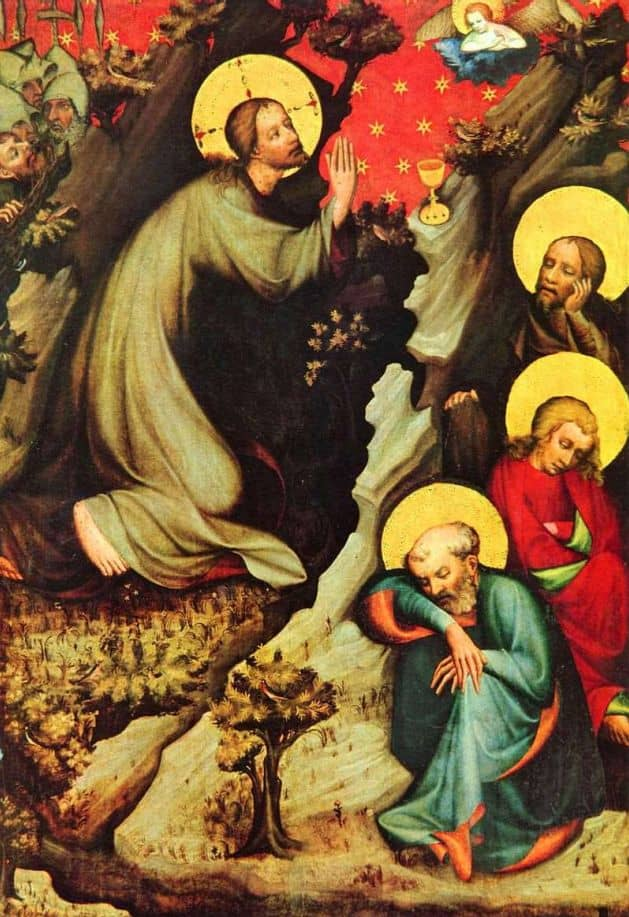

9. Gotické umění v evropských a českých zemích
- Gótové = barbaři, barbarský styl
- 1130 - 1450
- vznik ve Francii
-
2 TYPY
-
Katedrální
- Přestavba St. Denis → pohřebiště Fr. králů
-
Cisterciánská
- Šíření do dalších zemí
-
Katedrální
Katedrání gotika
ZNAKY
- cílem dostat do stavby co nejvíce světla okny (motiv záře)
- LOMENÝ OBLOUK
- OPĚRNÝ SYSTÉM
- ŽEBROVÉ KLENBY
-
KATEDRÁLA
- vychází z baziliky
- užší a širší transept
- věnec kaplí místo apsid → katedrální závěr
- poutní místo → lidé mohou projít obloukem katedrálu
SAINT DENIS
- 12. STOLETÍ
- VITRÁŽE A ROZETA SYMBOLIZUJÍCÍ SVĚT
Remeš
- KORUNOVAČNÍ MÍSTO FRANCOUZSKÝCH KRÁLŮ
- NOTRE-DAME → NAŠE PANÍ (motiv Panny Marie)

Cisterciácká gotika
KLÁŠTERY
- důraz na skromnost a prostotu → značná omezení
- ZÁKAZ POLYCHROMIE (barev → barvy byly drahé, hlavně zlata)
- ZÁKAZ VĚŽÍ (občas alespoň naznačení)
- ZÁKAZ VITRÁŽÍ
- nově postaveny u vody (moře, řeky)
Naše země
-
KATEDRÁLA SV. VÍTA
- hlavní vstup z jihu
-
Madony v sochařství i v malířství
- opět občas zmenšený dospělý Ježíš, časem transformace do dítěte
-
SOCHAŘSTVÍ
- výrazná plasticita (socha zasahuje do prostoru)
-
MALÍŘSTVÍ
- zlaté pozadí → nekoroduje, motiv bohatství a věčnosti (ducha i majetkem)
- texty v páscích
- stylizovaná krajina (mistr Vyšebrodský)
- hieratická perspektiva (významné postavy jsou větší)
- v pozdější gotice náznaky perspektivy
Obrázky
KATEDRÁLA SV. VÍTA
- vstup z jihu
- vpravo kaple sv. Václava
- popis opěrného systému, westwerk, věnec kaplí, celkově popis katedrály
PETR PARLÉŘ
- autor nejstarších sochařských portrétů a autoportrétů
- výrazná plasticita
- ochoz v katedrále
- postavil Katedrálu sv. Víta
SAINTE-CHAPELLE
- žebra, svorník, vitráže, barevnost (modrá nebesa, zlatá (pozlacená žula) věčnost)
MADONY
- mísovité záhyby
- na hlavě výstupek → koruny (královna nebes)
- uražené ruce, držel jablko → (motiv prvotního hříchu)

MISTR TŘEBOŇSKÉHO OLTÁŘE
- stíny
- diagonály
- hierarchie (strom-ježíš)
- nimbus (svatozář)
- příběh zajetí krista, vlevo nahoře jidáš s vojáky